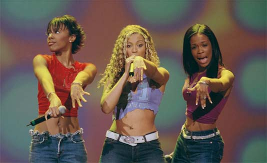
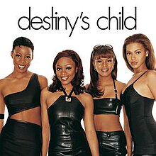
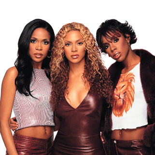
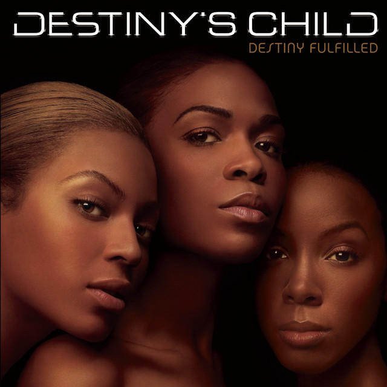
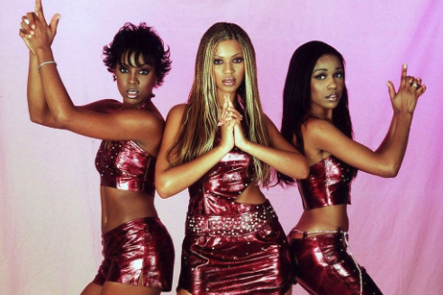
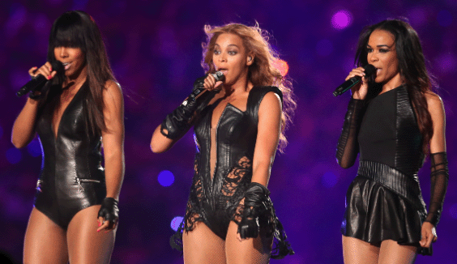

Spotlight de hoy: Destiny's Child
Destiny’s Child es sin duda uno de los grupos femeninos más influyentes y exitosos en la historia de la música. Con su mezcla de R&B, pop, y soul, marcaron una era y se convirtieron en un símbolo de empoderamiento femenino y talento vocal. Compuesto originalmente por Beyoncé Knowles, Kelly Rowland, y Michelle Williams (aunque con varios cambios de formación a lo largo de los años), el grupo dejó una huella imborrable en la cultura musical global desde su formación en los años 90 hasta su disolución oficial en 2006.
Inicios y Ascenso a la Fama
Destiny’s Child comenzó su carrera como un grupo de chicas de Houston, Texas, bajo el nombre Girl’s Tyme, donde Beyoncé y Kelly ya eran miembros clave. Tras algunos cambios en la alineación y años de trabajo, adoptaron el nombre definitivo de Destiny’s Child en 1996, un nombre inspirado en un pasaje bíblico. Su gran oportunidad llegó cuando firmaron un contrato discográfico con Columbia Records y lanzaron su álbum debut homónimo en 1998.
Sin embargo, no fue hasta el lanzamiento de su segundo álbum, "The Writing's on the Wall" (1999), que el grupo alcanzó el estrellato internacional. Este álbum incluyó éxitos como "Bills, Bills, Bills" y "Say My Name", los cuales se convirtieron en himnos de empoderamiento femenino. "Say My Name" les valió dos premios Grammy y consolidó a Destiny’s Child como una fuerza dominante en el R&B.
El Triunfo de la Independencia y el Cambio de Formación
A lo largo de su carrera, Destiny’s Child experimentó varios cambios en su alineación. El más notable fue en 2000, cuando Michelle Williams y Farrah Franklin reemplazaron a las miembros originales LeToya Luckett y LaTavia Roberson. Sin embargo, Franklin abandonó el grupo poco después, dejando a Beyoncé, Kelly y Michelle como la formación definitiva.
El grupo siguió avanzando con esta nueva alineación, lanzando el álbum "Survivor" en 2001, que catapultó su fama a un nivel aún mayor. Canciones como "Survivor", que daba título al álbum, y "Bootylicious" no solo dominaron las listas de éxitos, sino que también se convirtieron en himnos de fuerza y resiliencia. "Survivor" fue escrita en respuesta a las críticas que Destiny’s Child había recibido tras los cambios en su formación, y representaba la capacidad del grupo para superar adversidades.
Este álbum fue un punto de inflexión que no solo mostró el crecimiento del grupo en términos musicales, sino que también consolidó su imagen como embajadoras del empoderamiento femenino.
La Trayectoria de sus Miembros: El Éxito de Beyoncé y el Legado de Kelly y Michelle
Si bien Destiny’s Child fue un esfuerzo colectivo, la carrera en solitario de Beyoncé comenzó a despegar durante la última fase del grupo. Su primer álbum solista, "Dangerously in Love" (2003), la llevó al estatus de superestrella global, con éxitos como "Crazy in Love". A pesar de su éxito individual, Beyoncé siempre reconoció la importancia de Destiny’s Child como la plataforma que cimentó su carrera y le enseñó la disciplina del trabajo en equipo.
Por su parte, Kelly Rowland también encontró éxito en solitario, lanzando canciones como "Dilemma" junto a Nelly, que se convirtió en un éxito mundial. Michelle Williams, aunque más centrada en la música gospel, demostró su versatilidad al lanzarse en solitario y convertirse en una de las figuras más respetadas del gospel contemporáneo.
El Fin de una Era
En 2004, Destiny’s Child lanzó su último álbum de estudio, "Destiny Fulfilled", que incluyó éxitos como "Lose My Breath" y "Soldier". El álbum fue un recordatorio del talento y la química inigualable entre las tres mujeres, pero también marcó el fin de una era. En 2006, tras una gira mundial de despedida, Destiny’s Child anunció oficialmente su disolución, dejando un legado que aún resuena.
A lo largo de su carrera, Destiny’s Child vendió más de 60 millones de discos en todo el mundo, convirtiéndose en uno de los grupos femeninos más vendidos de la historia. Sus canciones siguen siendo influyentes y su impacto cultural sigue vivo, especialmente a través de la carrera solista de Beyoncé, quien continúa siendo una de las artistas más importantes del mundo.
Legado y Empoderamiento
Destiny’s Child no solo fue un grupo musical; fue una fuerza cultural que redefinió el concepto de grupos femeninos en la música pop y R&B. Con temas que abordaban la independencia, el amor propio, y la superación personal, Beyoncé, Kelly y Michelle ofrecieron a su público, en su mayoría femenino, una fuente constante de inspiración.
El grupo también desafió las expectativas de la industria musical, no solo por su éxito comercial, sino por su habilidad para trascender las modas pasajeras y mantenerse relevantes. El empoderamiento femenino fue un tema central en su música y su imagen pública, y su influencia puede sentirse en muchos de los artistas y grupos femeninos que vinieron después.
Destiny’s Child demostró que el trabajo en equipo, el talento y la dedicación pueden llevar a una grandeza duradera. A pesar de su disolución, el legado del grupo sigue vivo, y su música continúa siendo un símbolo de fuerza, empoderamiento y unidad entre mujeres.
Reencuentros y Nostalgia
Desde su separación, Destiny’s Child se ha reunido en varias ocasiones, incluyendo la icónica actuación en el Super Bowl en 2013 y en el festival Coachella en 2018. Estas reuniones han demostrado que, a pesar de seguir sus propios caminos, el vínculo entre las tres sigue siendo fuerte y la magia de Destiny’s Child permanece intacta.
Destiny’s Child sigue siendo una parte esencial de la historia de la música, y su influencia sigue impactando a generaciones de oyentes. En una era donde la música está cada vez más fragmentada, su legado es un recordatorio de lo que puede lograr la unidad, el talento y la perseverancia.